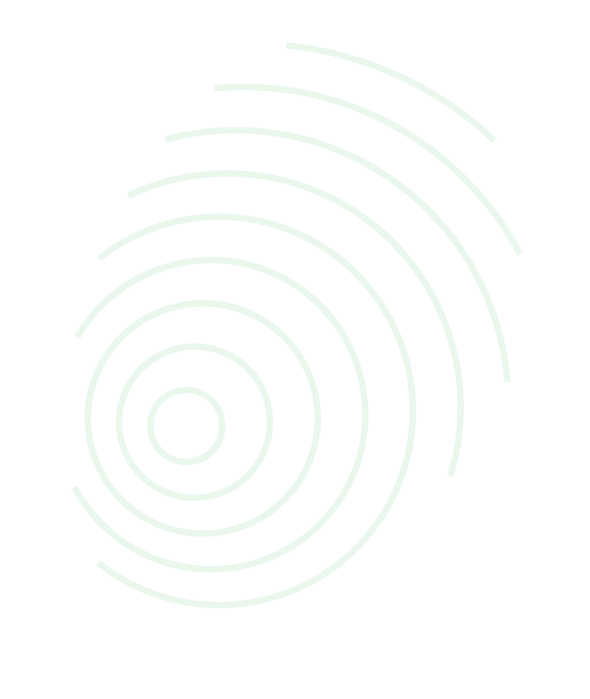
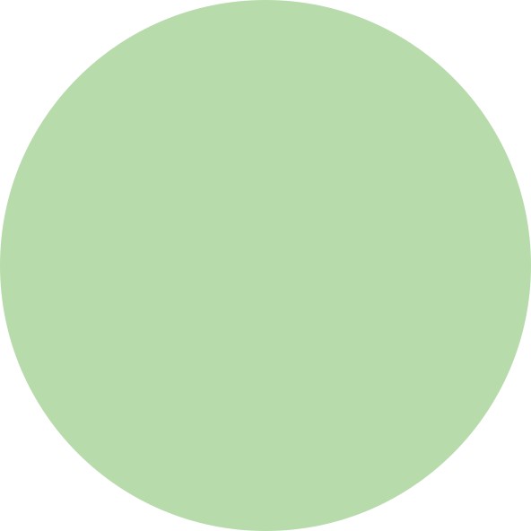
Briser le cycle de démangeaison-grattage
Crédits : Parsa Abdi, BEng; Kevin Li BSc MSPH
Dr. Marlene Dytoc MD, PhD, FRCPC
Conçu par : Danting Zheng BSc au premier cycle
Traduction : Cécilia Bernier BSc, Michelle Leung BScN
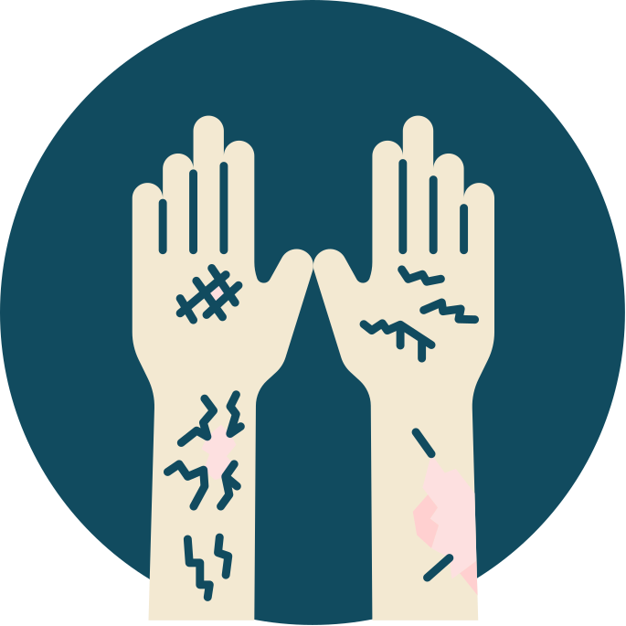
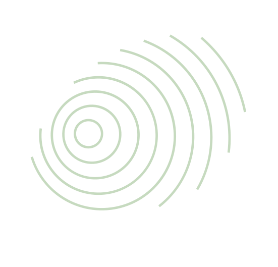
Ce que nous allons apprendre sur les démangeaisons
À la fin de ce module, vous serez en mesure de :
Aperçu du module
- 01Comprendre la démangeaison
- a) Qu’est-ce que la démangeaison?
- b) C’est quoi le cycle démangeaison-grattage?
- 02Qu’est-ce qui aggrave la démangeaison?
- a) Déclencheurs émotionnels (les émotions comptent!)
- b) Déclencheurs physiques (ce qui nous entoure)
- c) Démangeaisons pendant la nuit
- 03Briser le cycle
- a) Thérapie d’inversion des habitudes
- b) Bien hydrater sa peau
- c) Thérapie de bandages humides
- 04Points clés
Notre plan anti-grattage
Qu’est-ce que la démangeaison?
La démangeaison est la façon dont votre corps vous indique que quelque chose irrite votre peau.
Avec l’eczéma, la peau devient sèche, enflammée et très sensible.
Même de petites choses, comme la chaleur ou la sueur, peuvent provoquer des démangeaisons.
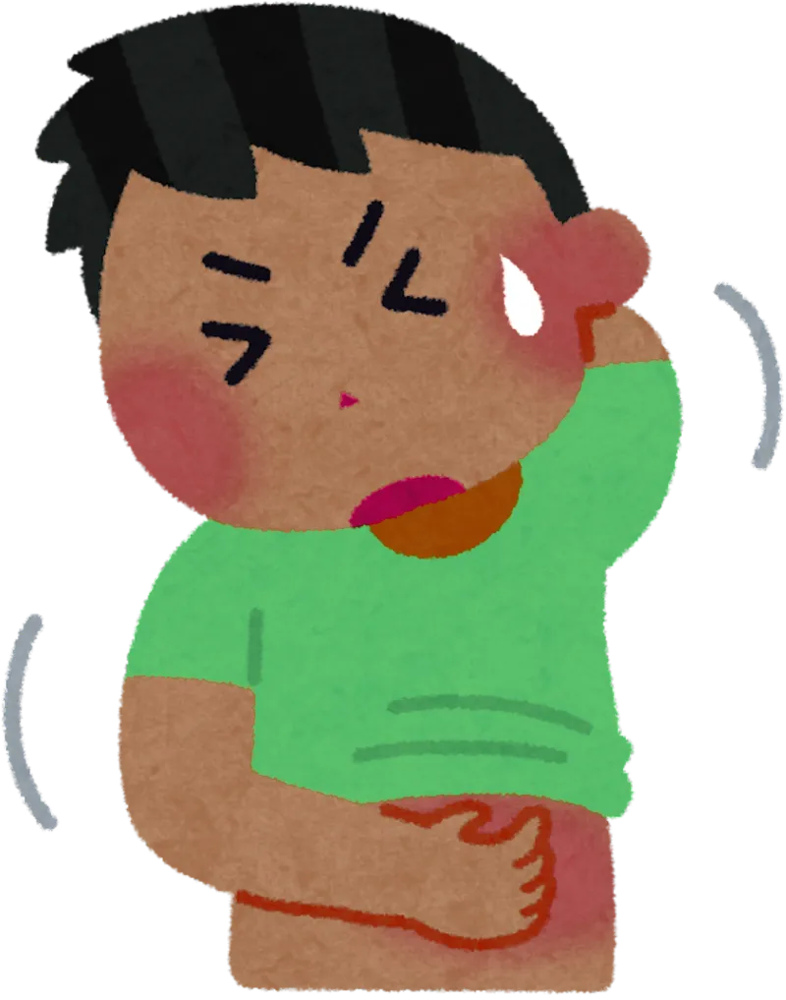
Le cycle démangeaison-grattage
Avec l’eczéma, la démangeaison ne fait pas que venir et repartir… elle s’auto-entretient.
- La démangeaison entraîne le grattage
- Le grattage cause des lésions cutanées
- La peau abîmée provoque encore plus de démangeaisons
Cela crée un cercle vicieux qui aggrave l’eczéma avec le temps.
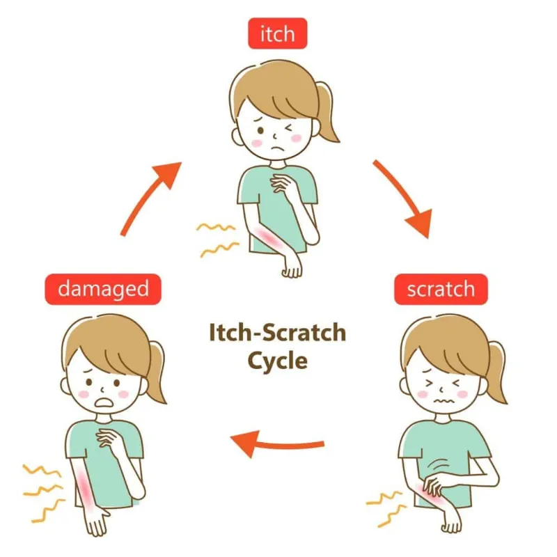
Le cerveau et la peau sont étroitement liés — vos émotions peuvent influencer l’intensité de vos démangeaisons.
Certaines personnes se grattent sans s’en rendre compte, par exemple lorsqu’elles se sentent nerveuses ou distraites.
Le stress peut rendre la peau plus sensible et les démangeaisons plus difficiles à ignorer.
Certaines personnes se grattent davantage lorsqu’elles sont fatiguées ou qu’elles passent une journée difficile.
Déclencheurs physiques des démangeaisons
- Savons, shampoings ou détergents contenant du parfum ou des ingrédients irritants.
- Chaleur et sueur.
- Air sec ou changements soudains de la météo.
- Tissus rugueux comme la laine et le polyester.
- Poussière, peaux et poils d’animaux, ou pollen.
- Bains ou douches longs et chauds.
Pourquoi les démangeaisons s’aggravent la nuit
Quatre raisons pour lesquelles les démangeaisons sont plus difficiles à gérer la nuit.
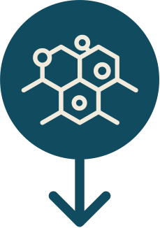
Moins de distractions
Sans les activités de la journée pour occuper votre esprit, les signaux de démangeaison retiennent toute votre attention.
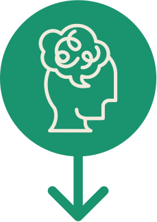
Baisse du cortisol
Le cortisol, l’anti-inflammatoire naturel du corps, diminue pendant la nuit et freine donc moins les démangeaisons.
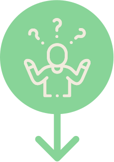
Température du corps
La chaleur du lit fait monter la température du corps, ce qui intensifie les signaux de démangeaison dans la peau.
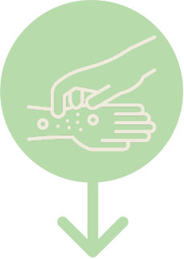
Sécheresse de la peau
La peau perd de l’humidité pendant la nuit — surtout dans une chambre chauffée — ce qui affaiblit davantage la barrière cutanée et augmente les démangeaisons.
Thérapie d’inversion des habitudes
Remarquer l’envie
Apprenez à reconnaître le moment où l’envie de vous gratter apparaît — avant que votre main ne bouge automatiquement.
Utiliser une réponse concurrente
Remplacez le grattage par une action volontaire : serrez le poing, posez la paume à plat ou appliquez une pression ferme sur la zone qui démange.
Pratiquer régulièrement
Avec le temps, la réponse concurrente devient votre nouvelle réaction automatique — et l’habitude de vous gratter s’affaiblit.
Fiche d’exercices (en anglais)
Fiche de thérapie d’inversion des habitudes
Observez quand vous vous grattez, choisissez une réponse concurrente et notez vos envies pendant 1 à 2 semaines.
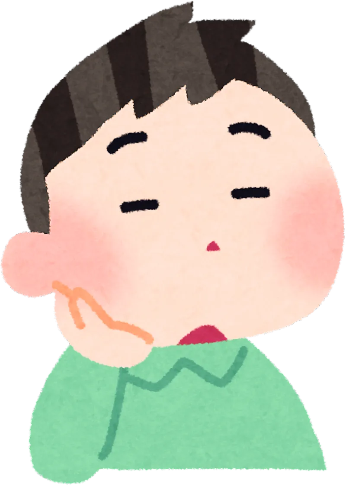
«Tremper et protéger» — et bandages humides
Retenir l’humidité rapidement fait une réelle différence.
Bain ou douche tiède (5 à 10 min)
Tiède, pas chaud. L’eau chaude abîme la barrière cutanée et aggrave l’inflammation.
Tapotez doucement — laissez la peau légèrement humide
Une peau humide absorbe mieux la crème hydratante qu’une peau complètement sèche.
Appliquez une crème épaisse dans les 3 minutes
Utilisez une crème ou un onguent — pas une lotion, qui est trop liquide et s’évapore rapidement.
Guide étape par étape (en anglais)
Thérapie de bandages humides
Une liste à imprimer pour chaque étape — y compris les signes à surveiller et quand appeler votre clinique.
Protéger votre sommeil
De petits changements à l’heure du coucher peuvent réduire beaucoup le grattage nocturne.
- Gardez la chambre fraîcheUne chambre plus fraîche (16 à 18 °C) limite la hausse de température qui intensifie les démangeaisons la nuit.
- Portez des gants de coton douxIls limitent les dommages causés par le grattage inconscient pendant le sommeil.
- Gardez les ongles courts et lissesDes ongles courts abîment beaucoup moins la peau si vous vous grattez.
- «Tremper et protéger» avant le coucherRetient l’hydratation et réduit la sécheresse et les démangeaisons pendant la nuit.
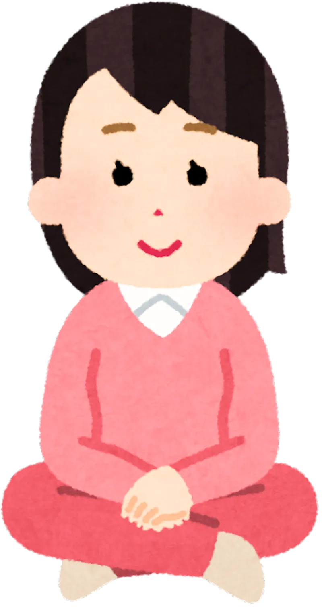
Prendre le temps d’y réfléchir
Question 1 de 4Prendre le temps d’y réfléchir
Question 2 de 4Prendre le temps d’y réfléchir
Question 3 de 4Prendre le temps d’y réfléchir
Question 4 de 4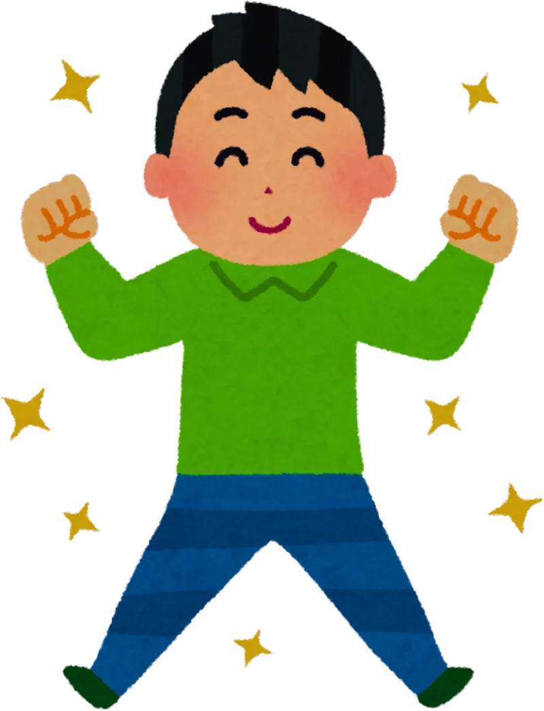
Points clés : maîtriser les démangeaisons!
- › La démangeaison entraîne le grattage. Le grattage abîme la peau. La peau abîmée démange encore plus. C’est ce cycle que vous êtes en train de briser.
- › Les déclencheurs émotionnels — stress, anxiété, fatigue — sont tout aussi réels que les déclencheurs physiques.
- › Les démangeaisons s’aggravent la nuit à cause du manque de distractions, de la baisse du cortisol, de la chaleur et de la sécheresse de la peau.
- › La thérapie d’inversion des habitudes donne à vos mains une autre réaction, volontaire, face à l’envie de vous gratter.
- › La méthode «tremper et protéger» — dans les 3 minutes suivant le bain — est l’une des façons les plus efficaces de retenir l’humidité et de réduire les démangeaisons.
Ce module offre de l’information générale et ne remplace pas les conseils de votre médecin ou de votre dermatologue. En cas de crise ou si vous pensez à vous faire du mal, composez le 911 ou appelez la ligne d’aide en santé mentale de l’AHS au 1-877-303-2642.
Sources
- Yosipovitch G, Berger T, Fassett MS. Neuroimmune interactions in chronic itch of atopic dermatitis. J Eur Acad Dermatol Venereol. 2020;34(2):239-250.
- Wollenberg A, et al. Consensus-based European guidelines for treatment of atopic eczema (atopic dermatitis). J Eur Acad Dermatol Venereol. 2018;32(5):850-878.
- Norén P, et al. The positive effects of habit reversal treatment of scratching in children with atopic dermatitis. Br J Dermatol. 1995;132(6):1-6.
- Grimalt R. A practical guide to scalp disorders. J Investig Dermatol Symp Proc. 2007;12(2):10-14.
- Chrostowska-Plak D, Salomon J, Reich A, Szepietowski JC. Clinical aspects of itch in adult atopic dermatitis patients. Acta Derm Venereol. 2009;89(4):379-383.
- National Eczema Association. Itch and Eczema: Managing the Itch-Scratch Cycle. nationaleczema.org.
- Eichenfield LF, et al. Guidelines of care for the management of atopic dermatitis. J Am Acad Dermatol. 2014;71(1):116-132.